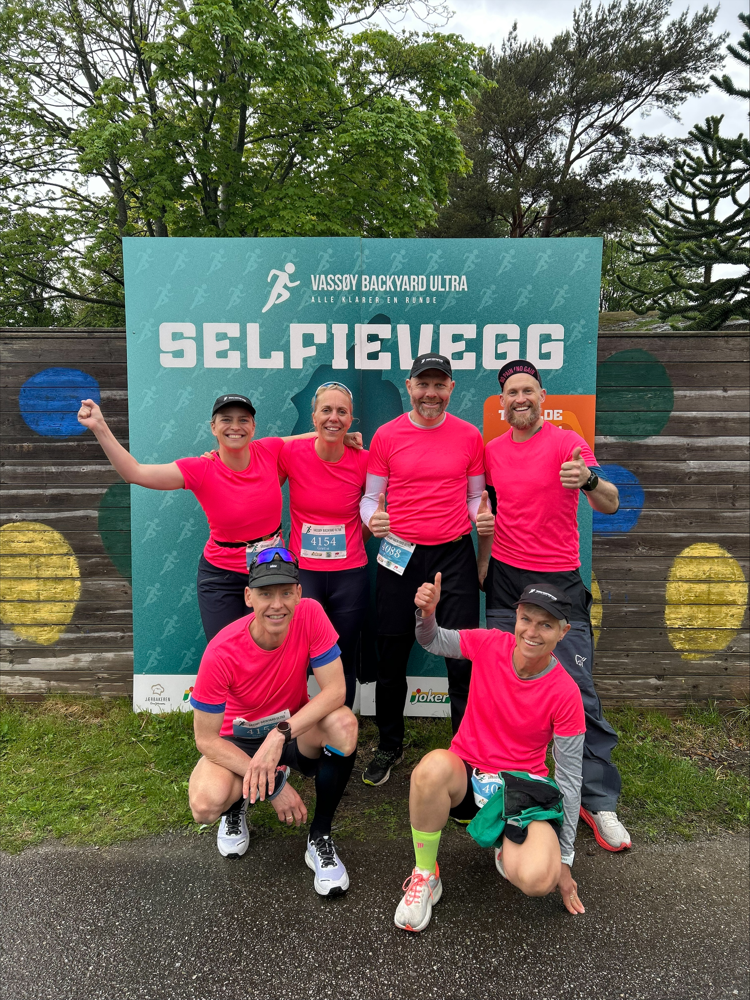

Årets store løpefest på øya. 6.7 km hver time. Hvor lenge holder du?
Bli med på festenVassøy Backyard Ultra ble arrangert for første gang 6. mai 2023, og har raskt blitt et enormt populært arrangement som arrangeres i mai hvert år. I 2024, 2025 & 2026 var løpet helt utsolgt!
Konseptet er enkelt, men brutalt: Løypa er 6.7 km. Du har én time på å fullføre. Starter du på neste runde før timen er gått? Det er opp til deg. Løpet går over maksimalt 12 runder (12 timer).
Før hver runde velger du selv hvilken av de to løypene du vil løpe. Begge starter ved Vassøy skole (Sørstrandveien 28).
Går i stor grad på asfaltert vei. Avsluttes med to runder inne på kunstgressbanen.
Samme start som løype 1, men går deretter ut i terrenget. Avsluttes også på kunstgressbanen.
Herreklassen
Halvard Solheim
Dameklassen
Lucia Thomassen
Ungdomsklassen
Anders Rogne Kallevåg
Påmelding til Vassøy Backyard Ultra 2027 åpner i løpet av høsten. Løpet ble fulltegnet i 2024, 2025 & 2026, så her gjelder det å være rask!
Følg oss på Instagram for å få beskjed når påmeldingen åpner.
Følg oss på Instagram for oppdateringer